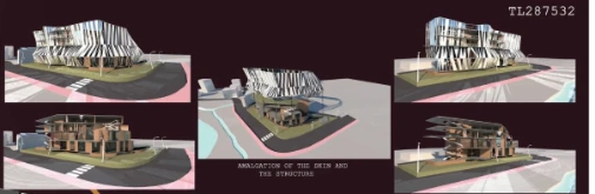

The same thinking as information architecture.
Architecture · Workplace
Stone Sculpture.
A workplace where skin and structure read as one.
- Type
- Workplace
- Stage
- Studio or competition?
- Year
- Year
- Drawn
- Axonometric, render

01 · Drawings
One axis, many rooms.

What it taught me
Space, then screens.
I trained as an architect. This is where my product thinking started.
A single clear route, like good navigation.
UI built on a design system.